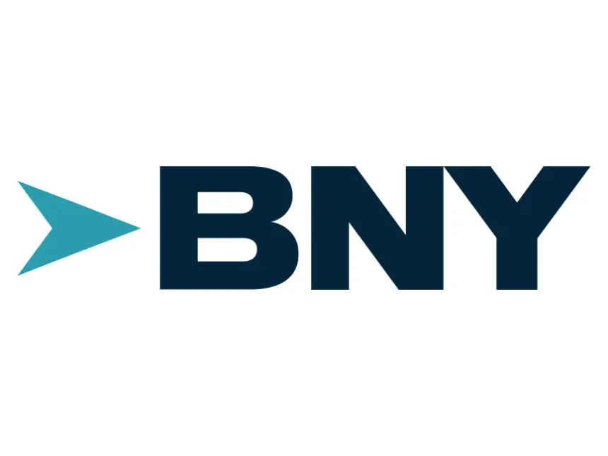

I am a finance and analytics professional with over four years of experience supporting institutional portfolios at Bank of New York Mellon, complemented by graduate-level training in Business Analytics at the University of Colorado Denver.
My experience spans portfolio operations, cash flow analysis, reconciliation, exception management, and client service within highly regulated environments. I bring a structured mindset and strong execution focus to drive reliable, data-informed outcomes.
Let’s connect and build solutions that matter.
Years Industry Experience
Business Analytics Projects
Cash Breaks Resolved
VIP Excellence Awards
Recognized for excellence in portfolio operations, analytical problem-solving, and delivering measurable client outcomes
Recognized for strong analytical discipline, structured problem-solving, and successfully resolving long-standing operational breaks across institutional portfolios.
Awarded for delivering critical client outcomes under tight timelines, resolving long-aged breaks, and reducing outstanding pending transactions to zero for the first time.
A progression through increasing responsibility in institutional portfolio operations, client service, and operational leadership within a highly regulated financial environment.

Representative – Client Processing
Jun 2021 – Jul 2022
Intermediate Representative – Client Processing
Jul 2022 – Mar 2024
Associate – Client Processing
Mar 2024 – Aug 2025
Applied finance and analytics work combining structured-finance modeling with data-driven portfolio analysis in Python.
A modular Python engine that models Collateralized Loan Obligation (CLO) cashflows end to end. It loads loan-level data, builds a pool summary, runs OC and IC coverage tests, and executes the payment waterfall across tranches based on configurable trigger logic, then generates a structured report of the results.
A data analysis project examining an optimized leveraged-loan portfolio. It analyzes allocation and industry exposure, visualizes risk versus return, and computes key metrics, achieving a 3.92% expected return at a 3.27% average default probability with a portfolio WARF of 3050 across a diversified, multi-sector book.
An end-to-end data visualization project analyzing a Brazilian e-commerce marketplace. I joined and cleaned multiple public datasets (~89K order lines) covering orders, products, customers, payments, and sellers, then built six analytical Tableau worksheets, an interactive dashboard, and a multi-step data story. Key insights included a concentrated category mix (toys leading order volume), credit cards as the dominant payment type, and a clear November sales spike driven by seasonal demand.
A retrieval-augmented generation (RAG) chatbot that answers student questions about courses, degree requirements, faculty, and schedules. Built with Streamlit for the interface and LangChain to orchestrate a pipeline that embeds advising documents, stores them in a FAISS vector database, and retrieves the most relevant context for a locally run Ollama language model, returning answers along with their source documents for transparency.
A statistical study examining how national culture relates to economic performance, pairing Hofstede's six cultural dimensions with GDP per capita for 60 countries across 2020–2024. Conducted in JMP, the analysis spans correlation and hypothesis testing, multiple linear regression with full diagnostics (VIF, residual and influence checks), factor analysis, and GDP forecasting, translating the results into practical insights for market-entry and investment decisions.
Open to opportunities in finance, analytics, and portfolio operations. Feel free to reach out — I’d be glad to connect.